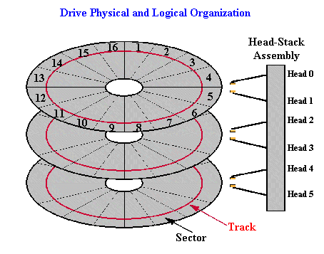

Bootloaders 3
Here, we are going to take a look at:
- the different "Rings" that describe differences between Application Programming and Systems Programming.
- single stage and multi stage bootloaders, and pros and cons of each.
- BIOS Interrupt 0x13, the OEM Parameter Block, and Reading, loading, and executing a program. This program will be our Second Stage Bootloader. Our Second Stage Bootloader will then set the 32 bit envirement, and prepare to load our C Kernel.
The Rings of Assembly Language
In Assembly Language, you might here the term "Ring 0 program", or "This program is running in Ring 3". Understanding the different rings (and what they are) can be usefull in OS Development.
Rings - Theory
Okay, so what is a ring? A "Ring", in Assembly Language, represents the level of protection and control the program has over the system. There are 4 rings: Ring 0, Ring 1, Ring 2, and Ring 3.
Ring 0 programs have absolute control over everything within a system, while ring 3 has less control. The smaller the ring number, the more control (and less level of protection), the software has.
A Ring is more then a concept--it is built into the processor architecture.
When the computer boots up, even when your Bootloader executes, the processor is in Ring 0. Most applications, such as DOS applications, run in Ring 3. This means Operating Systems, as running in Ring 0, have far more control over everything then normal Ring 3 applications.
Switching Rings
Because Rings are part of the processor architecture, the processor changes states whenever it needs to. It may change when...
- A directed instruction executes a program at a different ring level, such as a far jump, far call, far return, etc.
- A trap instruction, such as INT, SYSCALL, SYSENTER
- Exceptions
We will cover Exception Handling later, as well as the SYSCALL and SYSENTER instructions.
Multi Stage Bootloaders
Single Stage Bootloaders
Remember that bootloaders, and bootsectors, are only 512 bytes in size. If the bootloader, within that same 512 bytes, executed the kernel directly, it is called a Single Stage Bootloader. The problem with this, however, is that of its size. There is so little room to do alot within those 512 bytes. It will be very difficault to set up, load and execute a 32 bit kernel within a 16 bit bootloader. This does not include error handling code. This includes code for: GDT, IDT, A20, PMode, Loading and finding 32 bit kernel, executing kernel, and error handling. Fitting all of this code within 512 bytes is impossible. Because of this, Single stage bootloaders have to load and execute a 16 bit kernel.
Because of this problem, most bootloaders are Multi Stage Loaders.
Single and Multi Stage Bootloaders
A Multi Stage Bootloader consists of a single 512 byte bootloader (The Single Stage Loader), however it just loads and executes another loader - A Second Stage Bootloader. the Second Stage Bootloader is normally 16 bit, however it will include all of the code (listed in the previous section), and more. It will be able to load and execute a 32 bit Kernel. The reason this works is because the only 512 byte limitation is the bootloader. As long as the bootloader loads all of the sectors for the Second Stage loader in good manner, the Second Stage Loader has no limitation in size. This makes things much easier to set up for the Kernel.
We will be using a 2 Stage Bootloader.
Loading Sectors Off Disk
Remember that Bootloaders are limited to 512 bytes. Because of this, there is not a whole lot we can do. As stated in the previous section, we are going to be using a 2 Stage Bootloader. This means, we will need our Bootloader to load and execute our Stage 2 program -- The Kernel Loader. If you wanted to, The Stage 2 loader is the place to include your own "Choose your Operating System" and "Advanced Options" menu 😁 Come on, I know you want one. 😁
BIOS Interrupt (INT) 0x13 Function 0 - Reset Floppy Disk
The BIOS Interrupt 0x13 is used for disk access. You can use INT 0x13, Function 0 to reset the floppy drive. What this means is, wherever the Floppy Controller is reading from, it will immediately go to the first Sector on disk.
INT 0x13/AH=0x0 - DISK : RESET DISK SYSTEM AH = 0x0 DL = Drive to Reset
Returns: AH = Status Code CF (Carry Flag) is clear if success, it is set if failure
Here is a complete example. This resets the floppy drive, and will try again if there is an error:
.Reset:
mov ah, 0 ; reset floppy disk function
mov dl, 0 ; drive 0 is floppy drive
int 0x13 ; call BIOS
jc .Reset ; If Carry Flag (CF) is set, there was an error. Try resetting again
Why is this interrupt important to us? Before reading any sectors, we have to insure we begin from sector 0. We dont know what sector the floppy controller is reading from. This is bad, as it can change from any time you reboot. Reseting the disk to sector 0 will insure you are reading the same sectors each time.
BIOS Interrupt (INT) 0x13 Function 0x02 - Reading Sectors
INT 0x13/AH=0x02 - DISK : READ SECTOR(S) INTO MEMORY AH = 0x02 AL = Number of sectors to read CH = Low eight bits of cylinder number CL = Sector Number (Bits 0-5). Bits 6-7 are for hard disks only DH = Head Number DL = Drive Number (Bit 7 set for hard disks) ES:BX = Buffer to read sectors to
Returns: AH = Status Code AL = Number of sectors read CF = set if failure, cleared is successfull
Okay, This is alot to think about. Some of this is fairly easy, others should be explained more. Lets take a look closer, shall we?
CH = Low eight bits of cylinder number
What is a Cylinder? A cylinder is a group of tracks (with the same radius) on the disk. To better understand this, lets look at a picture:

Looking at the above picture, remember:
- Each Track is useually divided into 512 byte sectors. On floppies, there are 18 sectors per track.
- A Cylinder is a group of tracks with the same radius (The Red tracks in the picture above are one cylinder)
- Floppy Disks have two heads (Displayed in the picture)
- There is 2880 Sectors total.
What does this mean for us? The Cylinder number basically represents a track number on a single disk. In the case of a floppy disk, It represents the Track to read from.
In summary, there are 512 bytes per sector, 18 sectors per track, and 80 tracks per side.
CL = Sector Number (Bits 0-5). Bits 6-7 are for hard disks only
This is the first sector to begin reading from. Remember: There is only 18 sectors per track. This means that this value can only be between 0 and 17. You have to increase the current track number, and insure the sector number is correctly set to read the correct sector. If this value is greater then 18, The Floppy Controller will generate an exception, because the sector does not exist. Because there is no handler for it, The CPU will generate a second fault exception, which will ultimately lead to a Triple Fault.
DH = Head Number
Remember that some floppys have two heads, or sides, to them. Head 0 is on the front side, where sector 0 is. Because of this, We are going to be reading from Head 0. If this value is greater then 2, The Floppy Controller will generate an exception, because the head does not exist. Because there is no handler for it, The CPU will generate a second fault exception, which will ultimately lead to a Triple Fault.
DL = Drive Number (Bit 7 set for hard disks)
ES:BX = Buffer to read sectors to
What is a Drive Number? Its simply a number that, of course, represents a drive. Drive Number 0 useually represents a floppy drive. Drive Number 1 is useually for 5-1/4" Floppy drives. Because we are on a floppy, we want to read from the floppy disk. So, the drive number to read from is 0.
ES:BX stores the segment:offset base address to read the sectors into. Remember that the Base Address represents the starting address.
With this all in mind, lets try to read a sector.
Reading and loading a sector
To read a sector from disk, first reset the floppy drive, and just read:
.Reset:
mov ah, 0 ; reset floppy disk function
mov dl, 0 ; drive 0 is floppy drive
int 0x13 ; call BIOS
jc .Reset ; If Carry Flag (CF) is set, there was an error. Try resetting again
mov ax, 0x1000 ; we are going to read sector to into address 0x1000:0
mov es, ax
xor bx, bx
.Read:
mov ah, 0x02 ; function 2
mov al, 1 ; read 1 sector
mov ch, 1 ; we are reading the second sector past us, so its still on track 1
mov cl, 2 ; sector to read (The second sector)
mov dh, 0 ; head number
mov dl, 0 ; drive number. Remember Drive 0 is floppy drive.
int 0x13 ; call BIOS - Read the sector
jc .Read ; Error, so try again
jmp 0x1000:0x0 ; jump to execute the sector!
Note
If there is a problem reading the sectors, and you try to jump to it to execute it, The CPU will exeute whatever instructions at that address, weather or not the sector was loaded. This useually means the CPU will run into either an invalid/unkown instruction, or the end of memory, both will result in a Triple Fault.
The above code only reads and executes a raw sector, which is kind of pointless to our needs. For one**,We currently have PartCopy set up to copy only 512 bytes**, which means: Where and how are we going to create a raw sector?
Also, it is impossible for us to give this Raw Sector a "filename" because it does not exist. Its just a raw sector.
Finally, We currently have the bootloader setup for a FAT12 File System. Windows will attempt to read certain tables (File Allocation Tables) from Sector 2 and 3. However, with a Raw Sector, these tables are nonexistant, so Windows will take garbage values (as if it was the table). The result? When reading the floppy disk from Windows, you will see files and directories with currupt names, and enormous sizes (Have you ever seen a 2.5 Gigabyte file on a 3.14 MB Floppy? I have 😁)
Of course, We Will need to load sectors this way. Before we do, however, we have to find the Starting Sector, Number of sectors, base address, etc. of a file in order to load it properly. This is the bases of loading files off disk.
We will look at this next.
Navigating The FAT12 FileSystem
OEM Parameter Block - Detail
In the previous artical, we dumped an ugly table in our code. What was it? Oh yeah...
bpbBytesPerSector: DW 512
bpbSectorsPerCluster: DB 1
bpbReservedSectors: DW 1
bpbNumberOfFATs: DB 2
bpbRootEntries: DW 224
bpbTotalSectors: DW 2880
bpbMedia: DB 0xF0
bpbSectorsPerFAT: DW 9
bpbSectorsPerTrack: DW 18
bpbHeadsPerCylinder: DW 2
bpbHiddenSectors: DD 0
bpbTotalSectorsBig: DD 0
bsDriveNumber: DB 0
bsUnused: DB 0
bsExtBootSignature: DB 0x29
bsSerialNumber: DD 0xa0a1a2a3
bsVolumeLabel: DB "MOS FLOPPY "
bsFileSystem: DB "FAT12 "
Alot of this is pretty simple. Lets analyze this in some detail:
bpbBytesPerSector: DW 512
bpbSectorsPerCluster: DB 1
bpbBytesPerSector indicates the number of bytes that represents a sector. This must be a power of 2. Normally for floppy disks, it is 512 bytes.
bpbSectorsPerCluster indicates the number of sectors per cluster. In our case, we want one sectorper cluster.
bpbReservedSectors: DW 1
bpbNumberOfFATs: DB 2
A Reserved Sector is the number of sectors not included in FAT12. ie, not part of the Root Directory. In our case, The Bootsector, which contains our bootloader, will not be part of this directory. Because of this, bpbReservedSectors should be 1. This also means that the reserved sectors (Our bootloader) will not contain a File Allocation Table.
bpbNumberOfFATs rpresents the number of File Allocation Tables (FATs) on the disk. The FAT12 File System always has 2 FATs.
Normally, you would need to create these FAT tables. However, Because we are using VFD, **We can have Windows/VFD to create these tables for us when it formats the disk.
Note: These tables will also be written to by Windows/VFD when you add or delete entrys. ie, when you add a new file or directory.**
bpbRootEntries: DW 224
bpbTotalSectors: DW 2880
Floppy Disks have a maximum of 224 directories within its Root Directory. Also, Remember that there are 2,880 sectors in a floppy disk.
bpbMedia: DB 0xF0
bpbSectorsPerFAT: DW 9
The Media Descriptor Byte (bpbMedia) is a byte code that contains information about the disk. This byte is a Bit Pattern:
- Bits 0: Sides/Heads = 0 if it is single sided, 1 if its double sided
- Bits 1: Size = 0 if it has 9 sectors per FAT, 1 if it has 8.
- Bits 2: Density = 0 if it has 80 tracks, 1 if it is 40 tracks.
- Bits 3: Type = 0 if its a fixed disk (Such as hard drive), 1 if removable (Such as floppy drive)
- Bits 4 to 7 are unused, and always 1.
0xF0 = 11110000 binary. This means it is a single sided, 9 sectors per FAT, 80 tracks, and is a movable disk. Look at bpbSectorsPerFAT and you will see that it is also 9.
bpbSectorsPerTrack: DW 18
bpbHeadsPerCylinder: DW 2
Remember: from the previous tutorials/ There is 18 sectors per track. bpbHeadsPerCylinder simply represents that there are 2 heads that represents a cylinder. (If you dont know what a Cylinder is, please read the section "BIOS Interrupt (INT) 0x13" on Reading Sectors.)
bpbHiddenSectors: DD 0
This represents the number of sectors from the start of the physical disk and the start of the volume.
bpbTotalSectorsBig: DD 0
bsDriveNumber: DB 0
Remember that the floppy drive is Drive 0?
bsUnused: DB 0
bsExtBootSignature: DB 0x29
The Boot Signiture represents the type and version of this BIOS Parameter Block (This OEM Table) is. The values are:
- 0x28 and 0x29 indicate this is a MS/PC-DOS version 4.0 Bios Parameter Block (BPB)
We have 0x29, so this is the version we are using.
bsSerialNumber: DD 0xa0a1a2a3
bsVolumeLabel: DB "MOS FLOPPY "
bsFileSystem: DB "FAT12 "
The serial number is assigned by the utility that formats it. The serial number is unique to that particular floppy disk, and no two serial numbers should be identical. Microsoft, PC, and DR-DOS base the Seral number off of the current time and date like this:
Low 16 bits = ((seconds + month) << 8) + (hundredths + day_of_month)
High 16 bits = (hours << 8) + minutes + year
Because the serial number is overwritten, we could put whatever we want in it--it doesnt matter. The Volume Label is a string to indicate what is on the disk. Some OSs display this as its name.
Note
Volume Label string Must be 11 bytes. No more, and no less.
The Filesystem string is used for the same purpose, and no more.
Note
The Filesystem string must be 8 bytes, no more and no less.
Demo
Wow, thats alot of stuff, huh? The following is the bootloader I developed in this tutorial, that puts everything together. Please note: This demo will not work as is. It was originally intended for demonstration purposes only, and is not buildable in its current state. I plan to update this tutorial and make the demo buildable sometime during the next revision of the series.
;*********************************************
; Boot1.asm
; - A Simple Bootloader
;
; Operating Systems Development Tutorial
;*********************************************
bits 16 ; We are still in 16 bit Real Mode
org 0x7c00 ; We are loaded by BIOS at 0x7C00
start: jmp loader ; jump over OEM block
;*************************************************;
; OEM Parameter block / BIOS Parameter Block
;*************************************************;
TIMES 0Bh-$+start DB 0
bpbBytesPerSector: DW 512
bpbSectorsPerCluster: DB 1
bpbReservedSectors: DW 1
bpbNumberOfFATs: DB 2
bpbRootEntries: DW 224
bpbTotalSectors: DW 2880
bpbMedia: DB 0xF0
bpbSectorsPerFAT: DW 9
bpbSectorsPerTrack: DW 18
bpbHeadsPerCylinder: DW 2
bpbHiddenSectors: DD 0
bpbTotalSectorsBig: DD 0
bsDriveNumber: DB 0
bsUnused: DB 0
bsExtBootSignature: DB 0x29
bsSerialNumber: DD 0xa0a1a2a3
bsVolumeLabel: DB "MOS FLOPPY "
bsFileSystem: DB "FAT12 "
;***************************************
; Prints a string
; DS=>SI: 0 terminated string
;***************************************
Print:
lodsb ; load next byte from string from SI to AL
or al, al ; Does AL=0?
jz PrintDone ; Yep, null terminator found-bail out
mov ah, 0eh ; Nope-Print the character
int 10h
jmp Print ; Repeat until null terminator found
PrintDone:
ret ; we are done, so return
;*************************************************;
; Bootloader Entry Point
;*************************************************;
loader:
.Reset:
mov ah, 0 ; reset floppy disk function
mov dl, 0 ; drive 0 is floppy drive
int 0x13 ; call BIOS
jc .Reset ; If Carry Flag (CF) is set, there was an error. Try resetting again
mov ax, 0x1000 ; we are going to read sector to into address 0x1000:0
mov es, ax
xor bx, bx
mov ah, 0x02 ; read floppy sector function
mov al, 1 ; read 1 sector
mov ch, 1 ; we are reading the second sector past us, so its still on track 1
mov cl, 2 ; sector to read (The second sector)
mov dh, 0 ; head number
mov dl, 0 ; drive number. Remember Drive 0 is floppy drive.
int 0x13 ; call BIOS - Read the sector
jmp 0x1000:0x0 ; jump to execute the sector!
times 510 - ($-$$) db 0 ; We have to be 512 bytes. Clear the rest of the bytes with 0
dw 0xAA55 ; Boot Signiture
; End of sector 1, beginning of sector 2 ---------------------------------
org 0x1000 ; This sector is loaded at 0x1000:0 by the bootsector
cli ; just halt the system
hlt
Conclusion
We went in alot of detail about disk reading and the BIOS Parameter Block (BPB). We even developed a simple demo that combined everything together.
We also have taken a look at the different rings in assembly language, and learned that our OS is at Ring 0, which differenates it then most other programs. This allows us to use more special privedged instructions that application programs dont have.
Now, we have everything we need to find and load our second stage loader! We will learn everything about FAT12, and load the second stage in the next tutorial. I cant wait! 😁 Until next time,